Origin
CV Sensei started as a group AI project during a software development bootcamp. All five of us shared the same frustration: updating and tailoring a CV felt disproportionately time-consuming for something we had to do so often. We validated the idea through conversations with other students and our bootcamp instructors, using our shared frustration to form the question: "What if AI could solve this issue?"
We built a live AI-powered CV assistant aimed at job seekers who apply to multiple roles within a week. But as the bootcamp ended, one question stayed with me:
"What would make someone choose this over any other free AI chatbot they already use?"
Project Overview
The Problem
Job seekers face a fundamental tension between personalisation and efficiency. Whether they're a researcher whose academic writing gets filtered out by ATS systems, a seasoned professional drowning in 20 years of experience, or a high-volume applicant who can't rewrite from scratch for every role — the common thread is the same. The process of turning real experience into a compelling, targeted CV is broken.
Existing tools force a choice. Generic templates offer speed but no intelligence. AI writing tools offer suggestions but no structure. Professional CV writers offer quality but at a cost most can't justify. And through it all, the applicant is left to navigate the process completely alone.
The Solution
An AI-powered CV coach that transforms CVs through a guided chat experience, asking the right questions and keeping the full application process in mind. Users upload their experience, get intelligent suggestions to strengthen their language, optimise for ATS screening, and receive polished, role-targeted results — all in one flow.
UX Research
The origin question that stuck with me post-bootcamp became the foundation for a more rigorous second phase, aimed at starting with the user, rather than the technicalities of the product itself. Having just completed my professional UX Design certification, I applied everything I learnt, using a structured design framework to make the product better — this time as a solo project.
Research Methods
Across different industries and career stages, using open-ended questions to surface honest attitudes around the full job application process.
Using our original AI bootcamp project to identify edge cases, missed opportunities, and gain direct user feedback for evidence-based decisions.
Research Questions
To help answer my origin question — "What would make someone choose this over any other free AI chatbot they already use?" — the final question in particular was deliberate: designed to surface real expectations around AI help, rather than designing based on assumptions.
"Walk me through how you approach a job application."
"What do you feel when you have to update your CV?"
"If AI were to directly help you with your CV, what would that help ideally look like for you?"
Key Findings
Across all eight interviews, the same underlying conflicts surfaced repeatedly — regardless of industry, seniority, or prior experience with AI tools. The pain points participants described weren't isolated frustrations. They clustered into four deeper tensions that would go on to shape every design decision moving forward.
Users waste significant time wrestling with formatting before a single word of content is written. The effort is front-loaded and invisible to the reader, yet it determines whether the CV even gets opened.
Users undersold themselves through passive language — listing responsibilities rather than achievements. They didn't want AI to write for them — they wanted it to coach them.
Most participants knew ATS filtering existed but had little clarity on how to optimise for it. Adding all keywords felt inauthentic, and they had no way of knowing which ones actually mattered.
Users had no clear framework for deciding what to include or in what order. Without guidance, they defaulted to everything, producing unfocused CVs they weren't confident in.
"I apply to 30 jobs a week. Move one line in Word and the whole CV falls apart. I don't have time to reformat and rewrite for every role — just to get rejected by an algorithm before a human even sees my name." — Luca Ferrante, the Frequent Applicant
Defining the Problem
User Personas
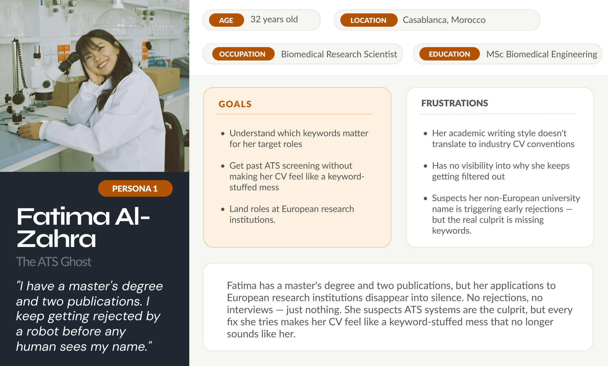
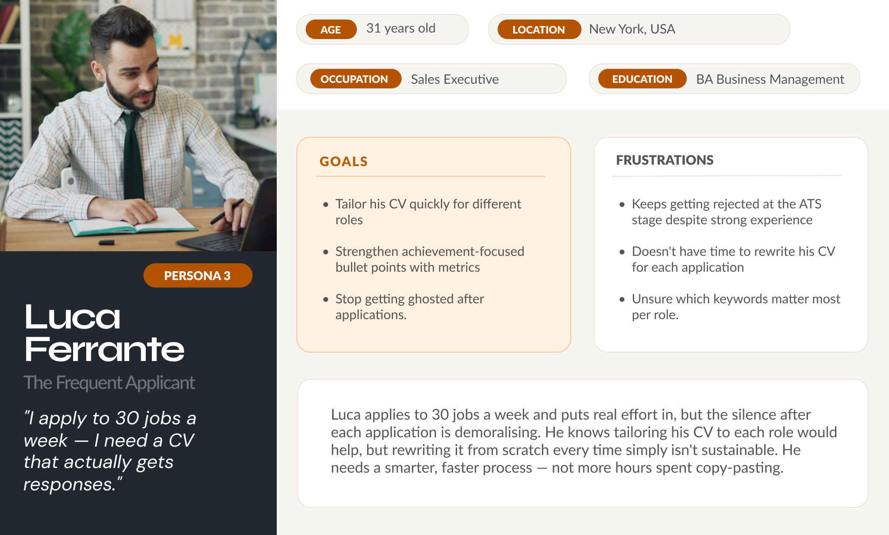
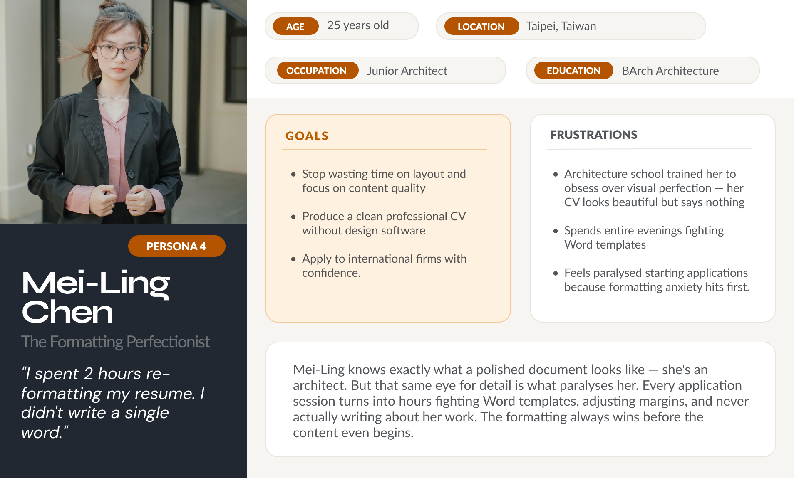
How Might We…
How might we reduce the time and cognitive load of CV editing without making the output feel generic or AI-generated?
How might we design an AI collaboration model where users feel like the author, not the passenger?
How might we surface ATS keyword gaps in a way that feels actionable rather than overwhelming — and that preserves the user's authentic voice?
How might we help users decide what to include and in what order — so their CV reflects what's most relevant, not just what's most recent?
Designing the Solution
User Flows
A key design decision was introducing a guest flow — letting users create a CV through the chat interface before committing to an account. Account creation is only triggered when they request to download their finished CV, lowering the barrier to entry and building trust before asking for personal details.
On sign-up, the CV downloads automatically and the user lands on their dashboard, where they can continue refining their existing CV or start a new one tailored to a different role.
User Flow Diagram
Auth is deferred to the download step — users experience full value before committing to an account.
UX Architecture
Once the user flows were mapped, I translated them into a full site hierarchy — creating a sitemap that gave me a bird's-eye view of the product structure and further exposed what the bootcamp version was missing. The final sitemap below reflects the full intended product architecture, including user settings, help centre and footer. Mapping task flows in parallel helped surface the disconnect between our original structure and the mental models users described in research, leading to several structural changes before a single wireframe was drawn.


Wireframes
What started as a simple AI agent grew into a full web app — one with a dedicated landing page that communicates value before asking users to commit to anything.
Key structural changes from bootcamp to solo project: a guest flow so users can explore the product without creating an account; a document view so users can preview their updated CV live and control every change before it's applied; and a homepage as a new entry point to communicate the product's value proposition upfront.
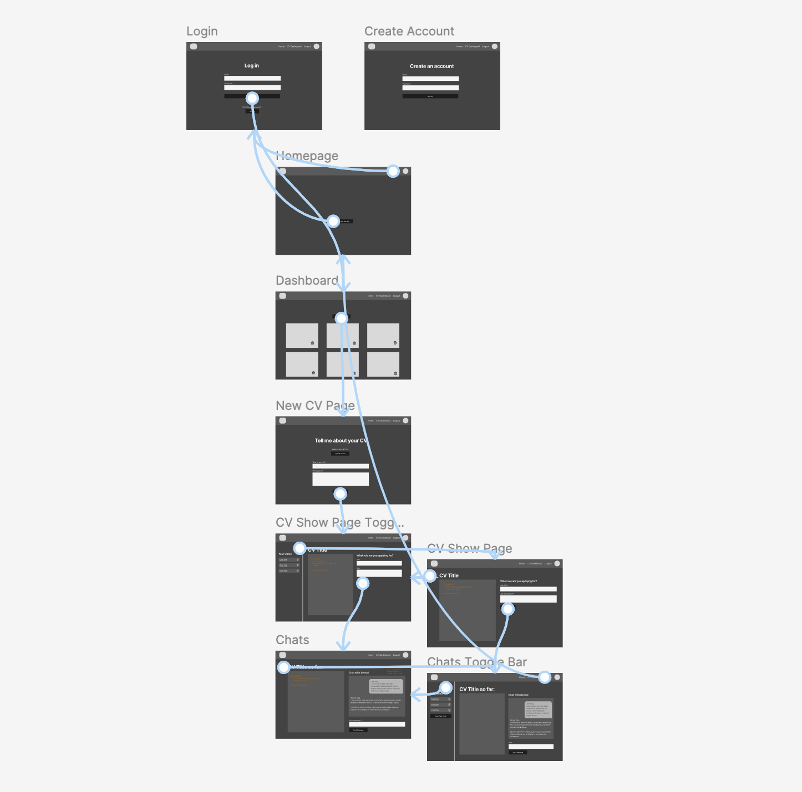
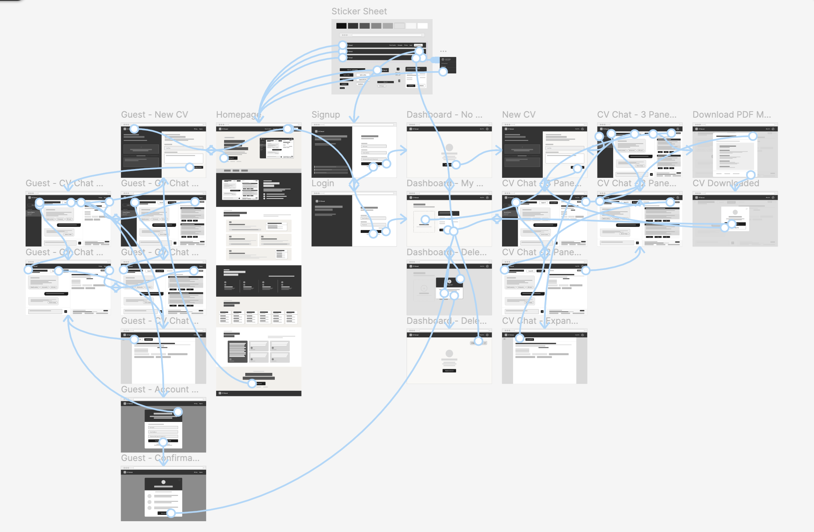
Mockups
HMW 1: Effort vs. Outcome
How might we reduce the time and cognitive load of CV editing without making the output feel generic or AI-generated?
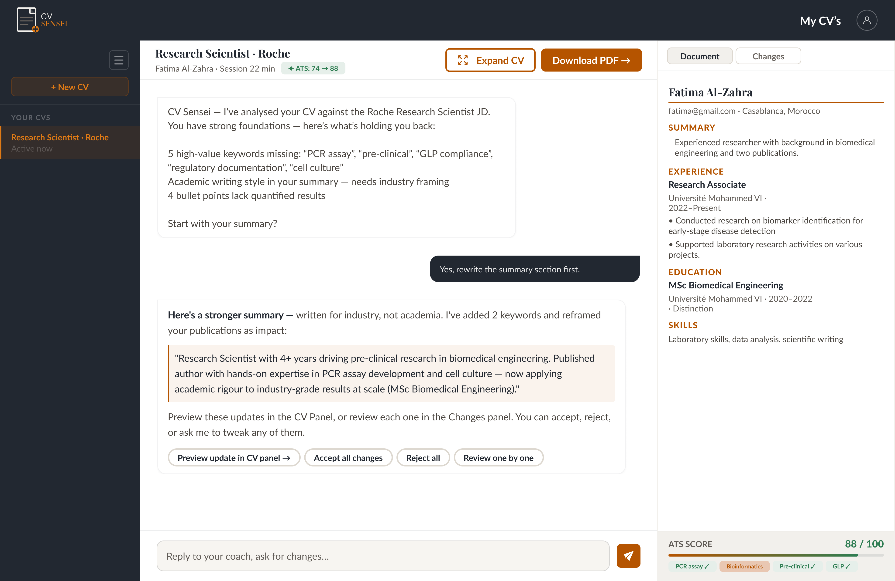
Users begin by uploading an existing CV or adding their experience manually. Regardless of input method, the output is automatically formatted and displayed alongside the chat in real time. All formatting and structural changes are handled conversationally through the AI coach — removing the cognitive load of editing a document manually each time.
HMW 2: Experience vs. Expression
How might we design an AI collaboration model where users feel like the author, not the passenger?
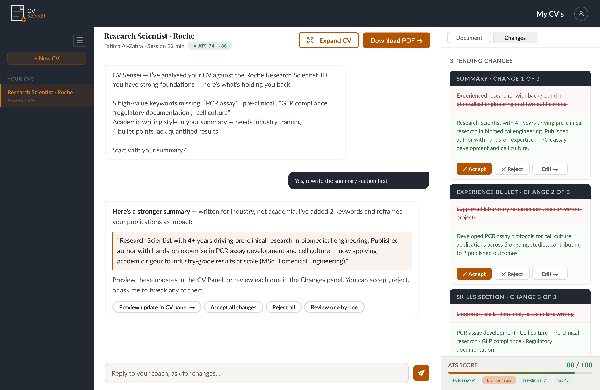
The Changes view gives users full editorial control — reviewing each AI suggestion individually and choosing to accept, reject, or edit it before it's applied. A Document/Changes toggle lets users switch seamlessly between reviewing suggestions and seeing their CV take shape. Layout, style, and content order can all be adjusted directly through the chat.
HMW 3: Visibility vs. Authenticity
How might we surface ATS keyword gaps in a way that feels actionable rather than overwhelming — and that preserves the user's authentic voice?
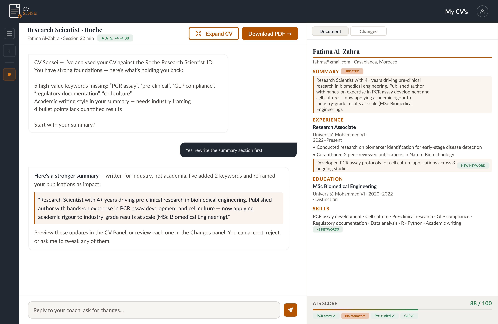
The ATS score is visible throughout the entire session, giving users a clear measure of progress without interrupting the flow of the conversation. Suggested keywords are surfaced directly on the CV preview with "new keyword" badges — showing exactly what was added and where. Users retain full control, and can edit any suggestion before approving it.
HMW 4: Content vs. Structure
How might we help users decide what to include and in what order — so their CV reflects what's most relevant, not just what's most recent?
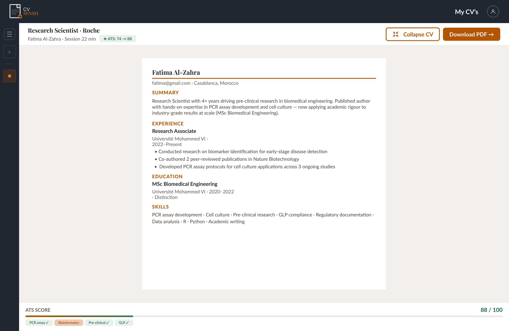
The AI coach opens by analysing the user's existing CV against their target role and job description. From there, users receive tailored content suggestions through the chat — guided on what to emphasise, what to trim, and what to remove entirely. The result is a CV shaped around relevance, not just chronology.
Refining the Design
User Testing
Five participants took part in unmoderated usability testing of the original bootcamp product. The sessions surfaced recurring friction points across three core screens — each addressed individually below.
Before & After — Design Iteration 01
Screen 1: New CV Page
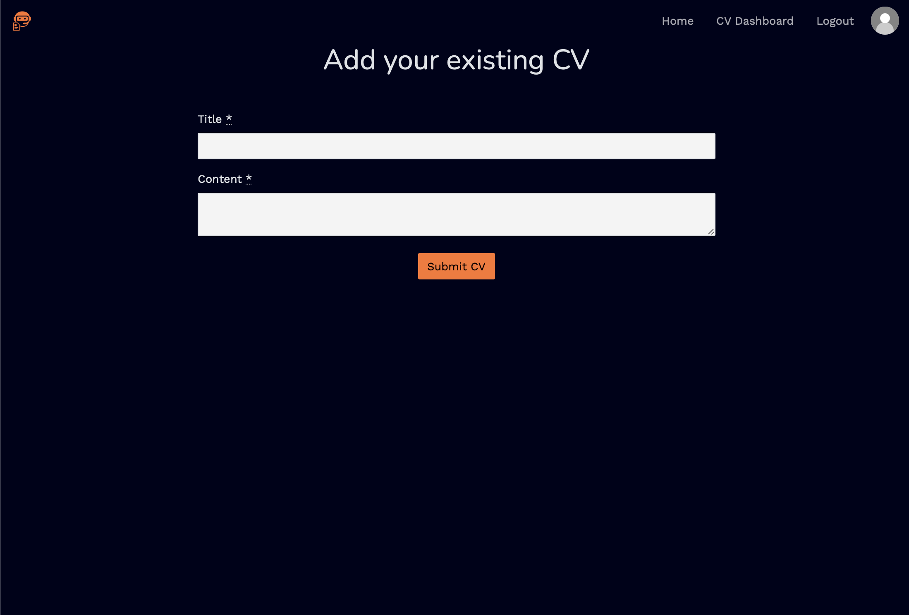
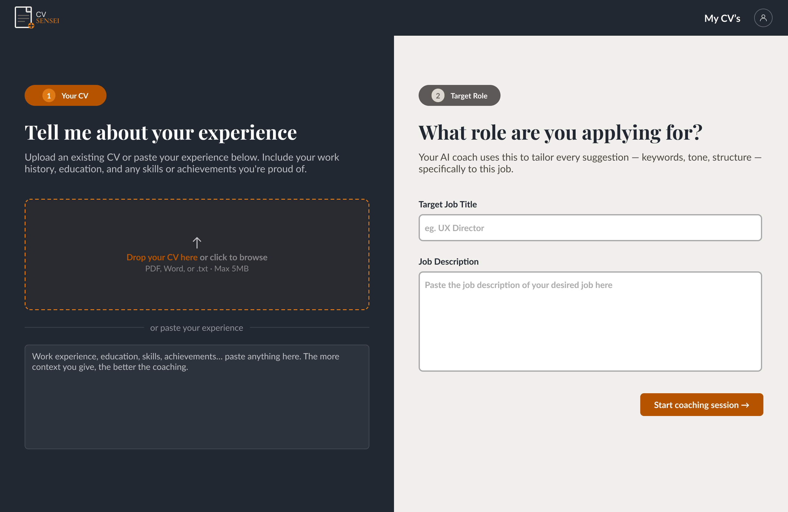
Users found the original "New CV" page restrictive — manually copying and pasting CV content for each CV chat created unnecessary friction. The redesign introduced a drag-and-drop upload, letting users drop in an existing CV in seconds. Target role and job description inputs were consolidated onto the same screen, so both are analysed simultaneously before the coaching session begins. (See iteration 02 for further improvements.)
Screen 2: CV Chat Page
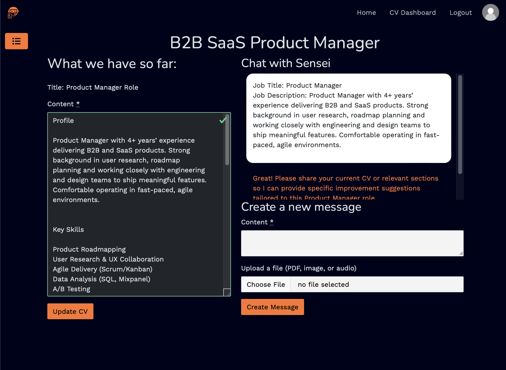
Users described the original chat interface as "crowded" and "visually overstimulating." The raw CV text box was flagged as both irrelevant and frustrating — users had to manually copy AI suggestions and paste them back into the document themselves. The redesign replaced this with a clean two-panel layout: chat on one side, a fully formatted live CV preview on the other. AI suggestions are applied to the CV with a single "accept" click — eliminating the manual copy-paste loop entirely.
Screen 3: CV Dashboard
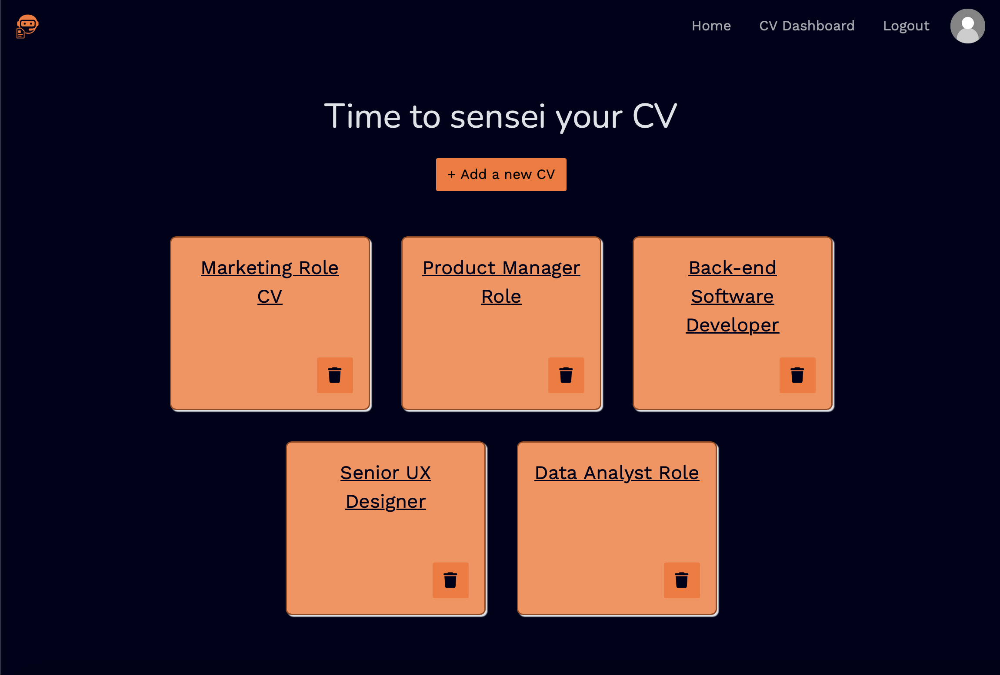
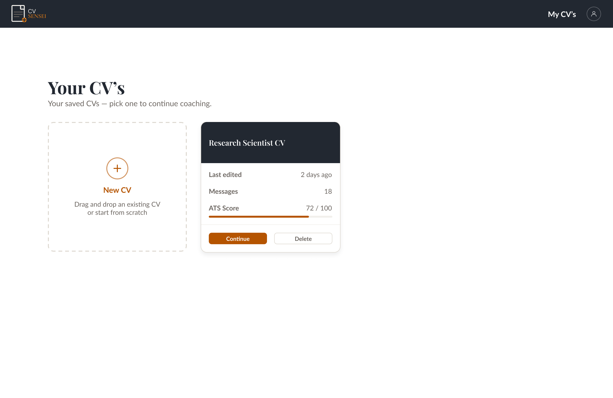
Users reported uncertainty about whether each dashboard card represented a CV coaching session or a finished document. The redesign resolved this by adding contextual metadata to each card — message count, last edited date, ATS score, and a "Continue" button — making it immediately clear that each card is an active coaching session, not a static file. The ambiguous "Add a new CV" button was replaced with a "New CV" card carrying the instruction "drag and drop an existing CV, or start from scratch" — removing any guesswork about what the action does.
Further Refinements — Design Iteration 02
The second round of usability testing validated the core redesign decisions. Participants responded positively to the two-panel layout, describing the live CV preview as "intuitive and helpful" — both as a real-time change tracker and as a document preview. Testing also surfaced three targeted improvements to the onboarding flow on the "New CV" page.
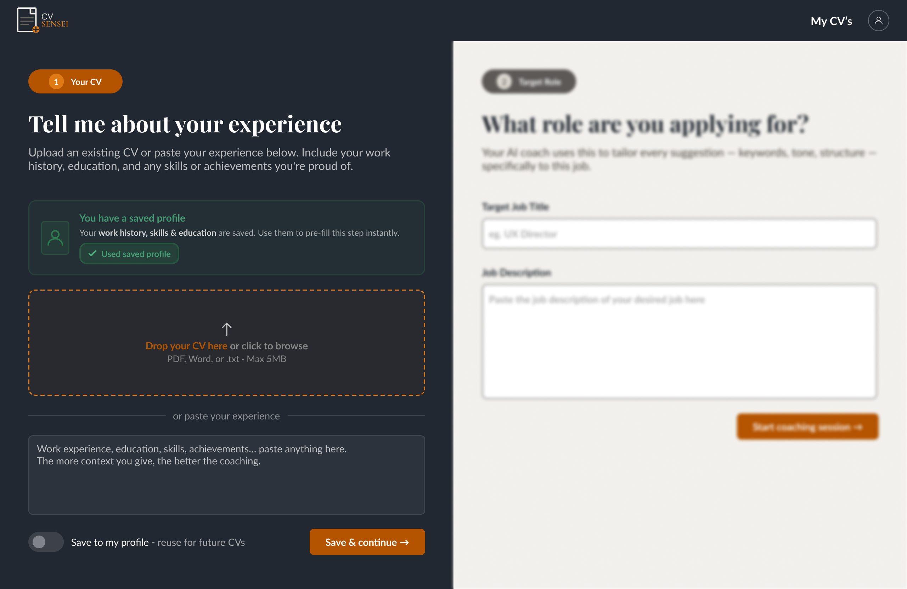
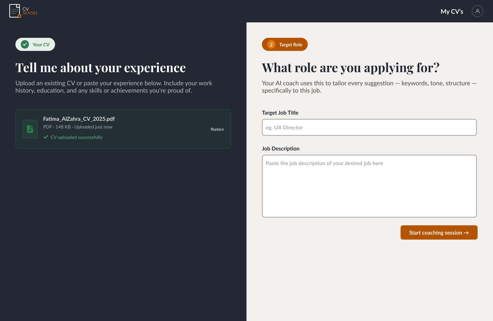
Accessibility Considerations
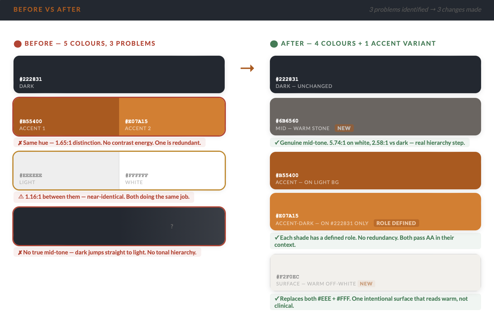
WCAG Colour Contrast
A full colour audit against WCAG AA standards identified three issues in the original palette — redundant accent shades, near-identical light surfaces, and a missing mid-tone creating an abrupt tonal jump. The palette was consolidated and each colour assigned a defined role, ensuring full AA compliance across all contexts.
Final Design
Product Snapshot — Landing PageTo see the full user flow and key product features, click here.
Reflection
What I Learned
- Following the design framework end to end — rather than jumping to solutions — is what separates a functioning product from one that genuinely matters to people. Every stage I was tempted to skip turned out to directly shape a better decision downstream.
- AI-powered products introduce a UX challenge general principles don't fully cover: users need to feel like collaborators, not passengers. That balance was the central design problem of this project.
- On a craft level: my first full design system, first WCAG colour audit, first high-fidelity responsive mockups — and learning to treat iteration as a deliberate phase, not a reaction.
What I'd Do Differently
- Establish the design system as a complete, component-based foundation before touching any screens. Moving into mockups while it was still partially defined meant revisiting decisions mid-build that should have been resolved upfront.
- Question the brief earlier. I approached this as improving an existing product — which shaped every decision including my research questions. With more distance, I'd ask whether the same user problems might call for an entirely different solution before assuming the direction.
Next Steps
Translate the final Figma designs into a working application using Builder.io and Claude MCP — moving the product from a design artefact into a real, testable product in users' hands.
With a live application, run a further round of testing focused on areas unique to production: AI model behaviour and output quality, response channelling across different CV types, and account security flows — validating that the experience holds up beyond the design environment.
Let's Connect
I'm actively looking for UX and frontend roles. Whether you want to talk about a project, a position, or just make contact — I'd love to hear from you.